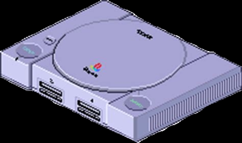

GAMES OF DEV
Leider habe ich weder eine online Variante von Quartern noch Tequila Suicide gefunden. Aber es gibt ja ein
paar
witzige online Spiele:
Zum Beispiel skribbl.io, wo eine:r malt und die Anderen müssen das Wort
erraten.
Auch Among Us ist eine Art Werwolf/Mafia Spiel, dass viel Spaß macht.
